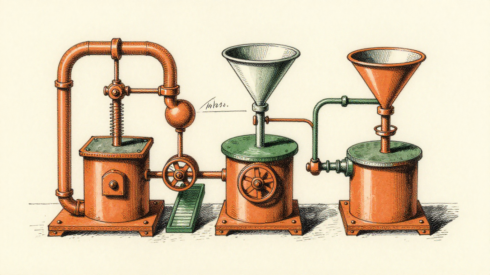
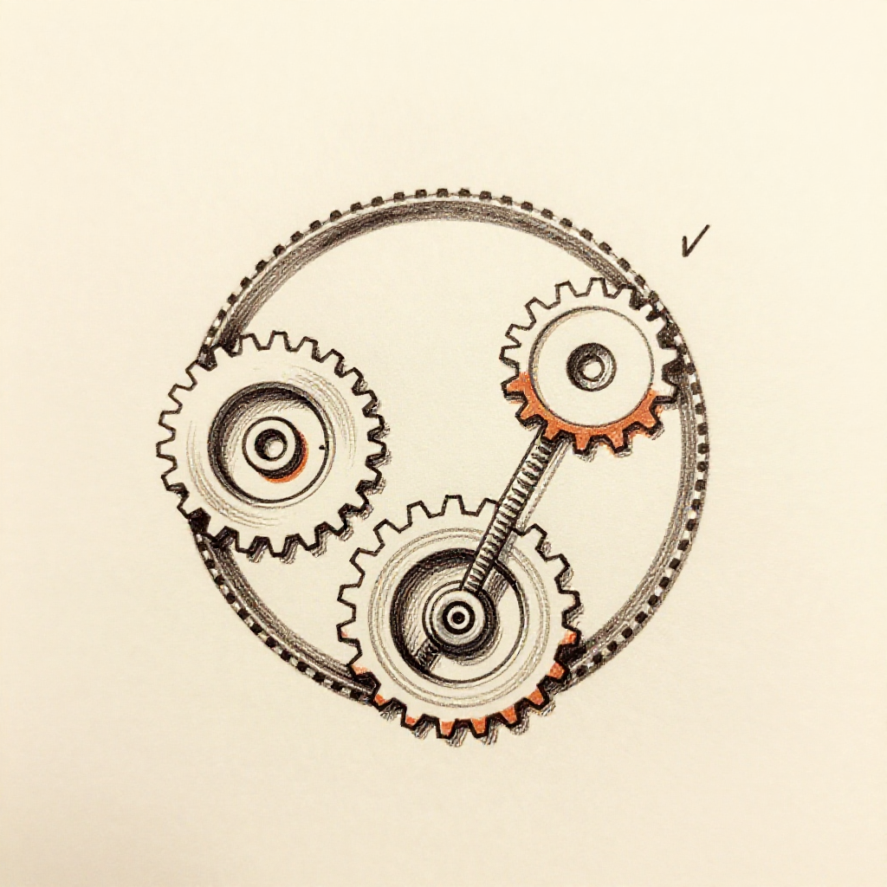

NEXT BEST MOVE
Clarify the display behavior
SAY THIS
The display scales to fit the screen. What are you seeing on your screen?
WHY NOW
reading the room → this is the moment it costs him something

Before · during · after — one loop
PitchGenius reads the buyer, the deal and the live conversation — then coaches the rep in the moment, while there is still time to change the outcome.
CRM
Records the deal.
Stage, activity, contacts, next steps — what already happened.
Conversation intelligence
Records the call.
Transcript, summary, coaching — after the fact.
PitchGenius
Reads the decision.
Buyer readiness, trust signals, resistance, and the next best move — while the moment is still alive.
Checked against Gong, Clari, Clari Copilot and Chorus: none of them claim live in-conversation reading. That is the wedge.
The spine of the product
Before the call · Buyer Blueprint
A profile of the person built before the call — how they decide, what builds their trust, what makes them resist.

During the call · the live card
A floating card over the call shows what the buyer is doing right now, scores how ready they are, and gives the exact sentence to say next. This is the part nobody else does.
SAY THIS
The display scales to fit the screen. What are you seeing on your screen?
WHY NOW
reading the room → this is the moment it costs him something
After the call · post-call analysis
When the call ends, the analysis is already there — every claim pointing at the moment it came from.

While the moment is still alive
NEXT BEST MOVE
Clarify the display behavior
SAY THIS
The display scales to fit the screen. What are you seeing on your screen?
WHY NOW
reading the room → this is the moment it costs him something
One coherent moment, from one real call. No invented numbers, anywhere on this page.
Who it's for
You walk in already briefed, coached in the moment, and the next call starts from evidence not memory. You stop losing deals you could have saved. You stop replaying the call wondering what you missed.
"Is this scoring me and handing the score to my manager?"
No. Your ten calibration answers are private. Managers see usage and deal activity. They do not see your answers.
The rep is the hero. PitchGenius is the earpiece, not the star.

The same loop tightens every call, for every rep, without anyone running a training session. Four levers, phrased as mechanisms — no invented percentages.
Your competitor's rep is going to have this. The question is whether yours does first.

The loop closes

Before → during → after → before. The blueprint informs the live coaching; the live call feeds the analysis; the analysis feeds the next blueprint. The same loop, across the team, tightening on its own.
"
"Our branding has really got to be Human plus AI. Enhance humans — not replace them."
— Russell, founder, on the branding call
Every closed contract you make as a seller is another piece of life you're building for your family.